Patient Info
Edema
Main Tumor
Necrotic
UCSF-PDGM-0283
Glioblastoma, IDH-wildtype
alive
OS: 748.0
Count 120916, 55764 Vertices, 112424 Triangles

Count 42759, 30647 Vertices, 61398 Triangles
Count 32529, 15358 Vertices, 30752 Triangles
UCSF-PDGM-0319
Glioblastoma, IDH-wildtype
alive
OS: 275.0
Count 66891, 38859 Vertices, 76958 Triangles
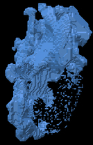Count 45699, 30148 Vertices, 60532 Triangles

Count 27150, 16467 Vertices, 33058 Triangles

UCSF-PDGM-0318
Glioblastoma, IDH-wildtype
alive
OS: 128.0
Count 108780, 38182 Vertices, 76708 Triangles
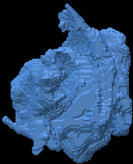Count 20461, 15662 Vertices, 31440 Triangles

Count 13619, 7212 Vertices, 14492 Triangles
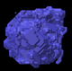UCSF-PDGM-0317
Glioblastoma, IDH-wildtype
alive
OS: 677.0
Count 33213, 10916 Vertices, 21844 Triangles

Count 823, 744 Vertices, 1484 Triangles

Count 26, 88 Vertices, 168 Triangles

UCSF-PDGM-0313
Glioblastoma, IDH-wildtype
alive
OS: 349.0
Count 28162, 23951 Vertices, 48234 Triangles
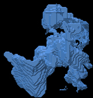Count 26749, 21844 Vertices, 43836 Triangles
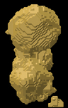Count 12086, 8747 Vertices, 17622 Triangles

UCSF-PDGM-0311
Glioblastoma, IDH-wildtype
alive
OS: 405.0
Count 68355, 39485 Vertices, 80026 Triangles

Count 52446, 37369 Vertices, 74982 Triangles
Count 27547, 20956 Vertices, 42164 Triangles
UCSF-PDGM-0320
Glioblastoma, IDH-wildtype
alive
OS: 571.0
Count 1859, 3753 Vertices, 7762 Triangles

Count 4767, 5525 Vertices, 11050 Triangles

Count 3853, 2309 Vertices, 4626 Triangles

UCSF-PDGM-0284
Glioblastoma, IDH-wildtype
alive
OS: 685.0
Count 42063, 17079 Vertices, 34246 Triangles
Count 4659, 4107 Vertices, 8194 Triangles
Count 119, 278 Vertices, 544 Triangles

UCSF-PDGM-0539
Glioblastoma, IDH-wildtype
alive
OS: 291.0
Count 8918, 5911 Vertices, 11874 Triangles
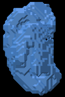Count 2779, 1804 Vertices, 3596 Triangles
Count 88, 240 Vertices, 468 Triangles

UCSF-PDGM-0321
Glioblastoma, IDH-wildtype
alive
OS: 280.0
Count 24169, 19507 Vertices, 39698 Triangles
Count 20687, 17060 Vertices, 34192 Triangles

Count 20813, 7919 Vertices, 15842 Triangles
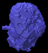UCSF-PDGM-0387
Glioblastoma, IDH-wildtype
alive
OS: 86.0
Count 8054, 6508 Vertices, 13156 Triangles

Count 12466, 8170 Vertices, 16328 Triangles

Count 3759, 2282 Vertices, 4556 Triangles
UCSF-PDGM-0381
Glioblastoma, IDH-wildtype
alive
OS: 302.0
Count 31403, 19105 Vertices, 38634 Triangles

Count 13166, 7453 Vertices, 14918 Triangles
Count 1929, 2600 Vertices, 5156 Triangles

UCSF-PDGM-0380
Glioblastoma, IDH-wildtype
alive
OS: 534.0
Count 71068, 23747 Vertices, 47518 Triangles

Count 8522, 6572 Vertices, 13136 Triangles
Count 4582, 2414 Vertices, 4820 Triangles
UCSF-PDGM-0375
Glioblastoma, IDH-wildtype
alive
OS: 616.0
Count 40950, 17227 Vertices, 34550 Triangles

Count 12412, 7726 Vertices, 15452 Triangles
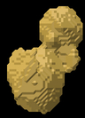Count 2098, 1824 Vertices, 3644 Triangles

UCSF-PDGM-0374
Glioblastoma, IDH-wildtype
alive
OS: 566.0
Count 20404, 9661 Vertices, 19454 Triangles

Count 2925, 2591 Vertices, 5174 Triangles
Count 0, 0 Vertices, 0 Triangles

UCSF-PDGM-0366
Glioblastoma, IDH-wildtype
alive
OS: 762.0
Count 66076, 34323 Vertices, 69554 Triangles

Count 15333, 18695 Vertices, 37522 Triangles

Count 31944, 8532 Vertices, 17056 Triangles

UCSF-PDGM-0364
Glioblastoma, IDH-wildtype
alive
OS: 740.0
Count 44222, 23030 Vertices, 46308 Triangles

Count 20646, 16360 Vertices, 32728 Triangles
Count 16945, 7655 Vertices, 15310 Triangles
UCSF-PDGM-0360
Glioblastoma, IDH-wildtype
alive
OS: 777.0
Count 48882, 34285 Vertices, 69586 Triangles
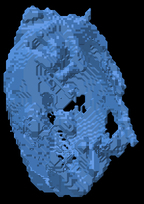Count 36199, 28767 Vertices, 57530 Triangles

Count 56886, 12485 Vertices, 24970 Triangles
UCSF-PDGM-0355
Glioblastoma, IDH-wildtype
alive
OS: 1037.0
Count 50279, 39658 Vertices, 81304 Triangles

Count 49563, 34520 Vertices, 69552 Triangles

Count 28022, 19179 Vertices, 38458 Triangles
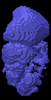UCSF-PDGM-0347
Glioblastoma, IDH-wildtype
alive
OS: 1333.0
Count 116572, 49851 Vertices, 100038 Triangles

Count 13541, 6853 Vertices, 13706 Triangles

Count 1541, 1702 Vertices, 3404 Triangles

UCSF-PDGM-0340
Glioblastoma, IDH-wildtype
alive
OS: 1347.0
Count 7632, 6842 Vertices, 13860 Triangles
Count 7236, 5965 Vertices, 11942 Triangles
Count 1662, 2401 Vertices, 4830 Triangles

UCSF-PDGM-0339
Glioblastoma, IDH-wildtype
alive
OS: 930.0
Count 26064, 16716 Vertices, 33796 Triangles
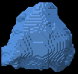Count 12795, 11270 Vertices, 22576 Triangles
Count 9524, 5199 Vertices, 10430 Triangles

UCSF-PDGM-0337
Glioblastoma, IDH-wildtype
alive
OS: 1113.0
Count 56158, 33319 Vertices, 66802 Triangles

Count 33297, 30955 Vertices, 62438 Triangles
Count 22884, 17385 Vertices, 35182 Triangles
UCSF-PDGM-0329
Glioblastoma, IDH-wildtype
alive
OS: 1812.0
Count 57658, 30421 Vertices, 61394 Triangles
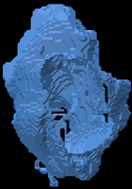Count 27765, 25130 Vertices, 50644 Triangles
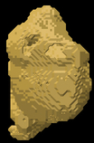Count 26280, 12672 Vertices, 25364 Triangles
UCSF-PDGM-0328
Glioblastoma, IDH-wildtype
alive
OS: 292.0
Count 48811, 26187 Vertices, 52934 Triangles
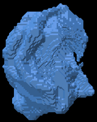Count 22218, 17057 Vertices, 34254 Triangles
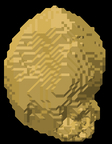Count 12015, 8195 Vertices, 16450 Triangles
UCSF-PDGM-0280
Glioblastoma, IDH-wildtype
alive
OS: 773.0
Count 120631, 51608 Vertices, 103820 Triangles

Count 38431, 32776 Vertices, 66004 Triangles
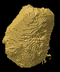Count 24770, 18937 Vertices, 38218 Triangles

UCSF-PDGM-0279
Glioblastoma, IDH-wildtype
alive
OS: 163.0
Count 20984, 12286 Vertices, 24692 Triangles
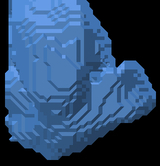Count 10159, 8730 Vertices, 17568 Triangles
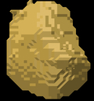Count 4344, 3792 Vertices, 7608 Triangles

UCSF-PDGM-0223
Glioblastoma, IDH-wildtype
alive
OS: 961.0
Count 20792, 22740 Vertices, 46504 Triangles

Count 22898, 16737 Vertices, 33598 Triangles
Count 12128, 7375 Vertices, 14802 Triangles
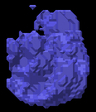UCSF-PDGM-0215
Glioblastoma, IDH-wildtype
alive
OS: 128.0
Count 65940, 37548 Vertices, 75376 Triangles

Count 22634, 17464 Vertices, 35052 Triangles

Count 6494, 5332 Vertices, 10720 Triangles

UCSF-PDGM-0390
Glioblastoma, IDH-wildtype
alive
OS: 618.0
Count 67948, 34697 Vertices, 70026 Triangles

Count 16021, 18324 Vertices, 36960 Triangles
Count 23839, 8655 Vertices, 17318 Triangles
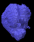UCSF-PDGM-0276
Glioblastoma, IDH-wildtype
alive
OS: 439.0
Count 134403, 49675 Vertices, 99942 Triangles
Count 22214, 14285 Vertices, 28634 Triangles

Count 7080, 6431 Vertices, 12914 Triangles
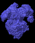UCSF-PDGM-0273
Glioblastoma, IDH-wildtype
alive
OS: 483.0
Count 9678, 12730 Vertices, 26356 Triangles

Count 10473, 10866 Vertices, 21808 Triangles

Count 8099, 5278 Vertices, 10596 Triangles
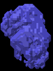UCSF-PDGM-0270
Glioblastoma, IDH-wildtype
alive
OS: 166.0
Count 102292, 34836 Vertices, 70016 Triangles
Count 33505, 20403 Vertices, 40854 Triangles

Count 6634, 9014 Vertices, 18052 Triangles

UCSF-PDGM-0391
Glioblastoma, IDH-wildtype
alive
OS: 711.0
Count 6779, 7595 Vertices, 15458 Triangles
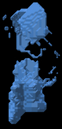Count 12389, 12273 Vertices, 24550 Triangles

Count 13602, 5644 Vertices, 11280 Triangles

UCSF-PDGM-0392
Glioblastoma, IDH-wildtype
alive
OS: 363.0
Count 49841, 19826 Vertices, 39712 Triangles

Count 1574, 1542 Vertices, 3068 Triangles
Count 13, 50 Vertices, 92 Triangles
UCSF-PDGM-0393
Glioblastoma, IDH-wildtype
alive
OS: 375.0
Count 49227, 31200 Vertices, 63128 Triangles

Count 18568, 20559 Vertices, 41258 Triangles
Count 21538, 9702 Vertices, 19436 Triangles

UCSF-PDGM-0510
Glioblastoma, IDH-wildtype
alive
OS: 252.0
Count 147854, 47942 Vertices, 96136 Triangles

Count 27542, 16512 Vertices, 33060 Triangles
Count 5795, 5795 Vertices, 11646 Triangles

UCSF-PDGM-0509
Glioblastoma, IDH-wildtype
alive
OS: 267.0
Count 22141, 13789 Vertices, 27694 Triangles
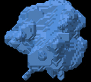Count 6152, 6048 Vertices, 12132 Triangles

Count 1800, 2019 Vertices, 4022 Triangles
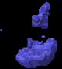UCSF-PDGM-0508
Glioblastoma, IDH-wildtype
alive
OS: 81.0
Count 66426, 38306 Vertices, 77252 Triangles

Count 35701, 22213 Vertices, 44422 Triangles
Count 14891, 9749 Vertices, 19490 Triangles
UCSF-PDGM-0507
Glioblastoma, IDH-wildtype
alive
OS: 35.0
Count 6521, 7660 Vertices, 15368 Triangles
Count 9477, 5999 Vertices, 12022 Triangles
Count 1704, 1860 Vertices, 3744 Triangles

UCSF-PDGM-0505
Glioblastoma, IDH-wildtype
alive
OS: 208.0
Count 21682, 11047 Vertices, 22382 Triangles

Count 1707, 1858 Vertices, 3732 Triangles
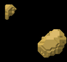Count 281, 467 Vertices, 934 Triangles

UCSF-PDGM-0504
Glioblastoma, IDH-wildtype
alive
OS: 1101.0
Count 13194, 11381 Vertices, 22870 Triangles

Count 21859, 17160 Vertices, 34352 Triangles

Count 22673, 7352 Vertices, 14708 Triangles

UCSF-PDGM-0503
Glioblastoma, IDH-wildtype
alive
OS: 204.0
Count 86231, 34648 Vertices, 69484 Triangles

Count 16884, 7652 Vertices, 15292 Triangles
Count 1603, 1996 Vertices, 3980 Triangles
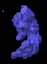UCSF-PDGM-0498
Glioblastoma, IDH-wildtype
alive
OS: 95.0
Count 35972, 30205 Vertices, 60734 Triangles

Count 48591, 27699 Vertices, 55438 Triangles
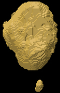Count 25376, 13246 Vertices, 26516 Triangles

UCSF-PDGM-0497
Glioblastoma, IDH-wildtype
alive
OS: 262.0
Count 104740, 32660 Vertices, 65416 Triangles
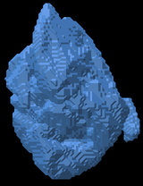Count 10700, 6455 Vertices, 12878 Triangles
Count 416, 831 Vertices, 1642 Triangles

UCSF-PDGM-0496
Glioblastoma, IDH-wildtype
alive
OS: 92.0
Count 64684, 32588 Vertices, 65368 Triangles

Count 13721, 13163 Vertices, 26454 Triangles
Count 11063, 6395 Vertices, 12886 Triangles

UCSF-PDGM-0493
Glioblastoma, IDH-wildtype
alive
OS: 114.0
Count 145794, 49155 Vertices, 98750 Triangles
Count 25344, 16198 Vertices, 32428 Triangles

Count 12445, 6739 Vertices, 13506 Triangles
UCSF-PDGM-0492
Glioblastoma, IDH-wildtype
alive
OS: 262.0
Count 171556, 57466 Vertices, 115052 Triangles
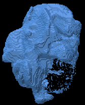Count 57240, 33955 Vertices, 67966 Triangles
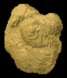Count 23498, 16987 Vertices, 34042 Triangles

UCSF-PDGM-0488
Glioblastoma, IDH-wildtype
alive
OS: 142.0
Count 55857, 43288 Vertices, 86960 Triangles
Count 55416, 28585 Vertices, 57182 Triangles
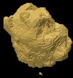Count 13922, 10167 Vertices, 20358 Triangles
UCSF-PDGM-0511
Glioblastoma, IDH-wildtype
alive
OS: 112.0
Count 61951, 40257 Vertices, 81254 Triangles
Count 26841, 26500 Vertices, 53020 Triangles

Count 56872, 11823 Vertices, 23646 Triangles

UCSF-PDGM-0514
Glioblastoma, IDH-wildtype
alive
OS: 375.0
Count 139863, 60891 Vertices, 121858 Triangles

Count 19086, 13641 Vertices, 27378 Triangles

Count 6878, 6613 Vertices, 13354 Triangles
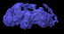UCSF-PDGM-0538
Glioblastoma, IDH-wildtype
alive
OS: 287.0
Count 27047, 13875 Vertices, 27886 Triangles
Count 11724, 11244 Vertices, 22896 Triangles

Count 4480, 5852 Vertices, 11936 Triangles

UCSF-PDGM-0537
Glioblastoma, IDH-wildtype
alive
OS: 334.0
Count 15445, 8914 Vertices, 17832 Triangles

Count 140, 206 Vertices, 408 Triangles
Count 0, 0 Vertices, 0 Triangles

UCSF-PDGM-0536
Glioblastoma, IDH-wildtype
alive
OS: 267.0
Count 30919, 17762 Vertices, 35788 Triangles
Count 12612, 10584 Vertices, 21252 Triangles
Count 4946, 3977 Vertices, 8022 Triangles

UCSF-PDGM-0534
Glioblastoma, IDH-wildtype
alive
OS: 55.0
Count 23043, 18358 Vertices, 36952 Triangles

Count 3792, 5500 Vertices, 11272 Triangles

Count 0, 0 Vertices, 0 Triangles

UCSF-PDGM-0533
Glioblastoma, IDH-wildtype
alive
OS: 292.0
Count 139570, 50556 Vertices, 101340 Triangles

Count 25787, 24914 Vertices, 50632 Triangles

Count 16218, 12881 Vertices, 25798 Triangles
UCSF-PDGM-0527
Glioblastoma, IDH-wildtype
alive
OS: 150.0
Count 19205, 14683 Vertices, 29458 Triangles

Count 37353, 33266 Vertices, 66716 Triangles
Count 49901, 15806 Vertices, 31644 Triangles

UCSF-PDGM-0526
Glioblastoma, IDH-wildtype
alive
OS: 126.0
Count 49999, 34661 Vertices, 70446 Triangles
Count 29782, 17702 Vertices, 35604 Triangles

Count 6199, 5922 Vertices, 11816 Triangles
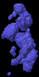UCSF-PDGM-0525
Glioblastoma, IDH-wildtype
alive
OS: 37.0
Count 41148, 20789 Vertices, 41566 Triangles

Count 19303, 11403 Vertices, 22858 Triangles
Count 1107, 1862 Vertices, 3708 Triangles
UCSF-PDGM-0524
Glioblastoma, IDH-wildtype
alive
OS: 680.0
Count 47135, 20884 Vertices, 41960 Triangles

Count 7801, 5169 Vertices, 10342 Triangles

Count 217, 527 Vertices, 1054 Triangles
UCSF-PDGM-0523
Glioblastoma, IDH-wildtype
alive
OS: 156.0
Count 82532, 42790 Vertices, 86232 Triangles
Count 27642, 16860 Vertices, 33792 Triangles
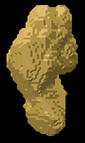Count 7029, 6926 Vertices, 13916 Triangles
UCSF-PDGM-0522
Glioblastoma, IDH-wildtype
alive
OS: 306.0
Count 55456, 35592 Vertices, 72172 Triangles

Count 25556, 24236 Vertices, 48480 Triangles
Count 46498, 10996 Vertices, 22012 Triangles
UCSF-PDGM-0521
Glioblastoma, IDH-wildtype
alive
OS: 305.0
Count 20864, 8179 Vertices, 16426 Triangles

Count 802, 926 Vertices, 1844 Triangles
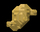Count 71, 140 Vertices, 276 Triangles

UCSF-PDGM-0520
Glioblastoma, IDH-wildtype
alive
OS: 373.0
Count 106443, 49139 Vertices, 99058 Triangles

Count 29598, 21130 Vertices, 42340 Triangles
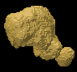Count 9040, 8580 Vertices, 17228 Triangles

UCSF-PDGM-0519
Glioblastoma, IDH-wildtype
alive
OS: 320.0
Count 8743, 10007 Vertices, 20414 Triangles

Count 8430, 6934 Vertices, 13896 Triangles
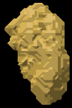Count 2016, 2377 Vertices, 4754 Triangles
UCSF-PDGM-0518
Glioblastoma, IDH-wildtype
alive
OS: 369.0
Count 125200, 58112 Vertices, 116860 Triangles

Count 62014, 43442 Vertices, 87232 Triangles

Count 58276, 23870 Vertices, 48008 Triangles

UCSF-PDGM-0516
Glioblastoma, IDH-wildtype
alive
OS: 316.0
Count 28005, 14699 Vertices, 29450 Triangles

Count 6645, 4318 Vertices, 8652 Triangles

Count 484, 739 Vertices, 1502 Triangles

UCSF-PDGM-0214
Glioblastoma, IDH-wildtype
alive
OS: 845.0
Count 53613, 28315 Vertices, 56938 Triangles

Count 22840, 13522 Vertices, 27040 Triangles

Count 8661, 5547 Vertices, 11114 Triangles

UCSF-PDGM-0481
Glioblastoma, IDH-wildtype
alive
OS: 483.0
Count 92423, 39720 Vertices, 80256 Triangles
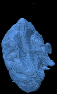Count 18926, 15884 Vertices, 31768 Triangles
Count 21366, 6705 Vertices, 13406 Triangles

UCSF-PDGM-0431
Glioblastoma, IDH-wildtype
alive
OS: 358.0
Count 49801, 33231 Vertices, 67998 Triangles
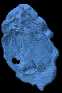Count 40305, 28297 Vertices, 56882 Triangles
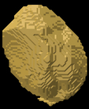Count 18511, 15874 Vertices, 32048 Triangles

UCSF-PDGM-0426
Glioblastoma, IDH-wildtype
alive
OS: 249.0
Count 22693, 23516 Vertices, 48020 Triangles

Count 44157, 38714 Vertices, 78056 Triangles

Count 40786, 22684 Vertices, 45852 Triangles
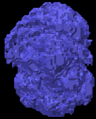UCSF-PDGM-0424
Glioblastoma, IDH-wildtype
alive
OS: 504.0
Count 2783, 5776 Vertices, 12068 Triangles

Count 10544, 8740 Vertices, 17468 Triangles
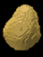Count 6781, 3498 Vertices, 6988 Triangles

UCSF-PDGM-0423
Glioblastoma, IDH-wildtype
alive
OS: 602.0
Count 24317, 21638 Vertices, 43684 Triangles
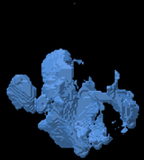Count 26455, 25086 Vertices, 50468 Triangles
Count 25231, 13298 Vertices, 26632 Triangles
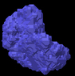UCSF-PDGM-0421
Glioblastoma, IDH-wildtype
alive
OS: 518.0
Count 20779, 13521 Vertices, 27314 Triangles

Count 4845, 4104 Vertices, 8212 Triangles

Count 953, 1523 Vertices, 3078 Triangles

UCSF-PDGM-0420
Glioblastoma, IDH-wildtype
alive
OS: 213.0
Count 17724, 10114 Vertices, 20524 Triangles

Count 4842, 3638 Vertices, 7272 Triangles
Count 1143, 1104 Vertices, 2208 Triangles

UCSF-PDGM-0419
Glioblastoma, IDH-wildtype
alive
OS: 307.0
Count 7727, 9787 Vertices, 20006 Triangles
Count 11483, 6200 Vertices, 12380 Triangles
Count 816, 1382 Vertices, 2764 Triangles
UCSF-PDGM-0414
Glioblastoma, IDH-wildtype
alive
OS: 351.0
Count 56927, 28709 Vertices, 58082 Triangles
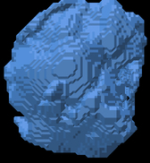Count 23086, 16865 Vertices, 33758 Triangles

Count 13366, 7549 Vertices, 15078 Triangles

UCSF-PDGM-0411
Glioblastoma, IDH-wildtype
alive
OS: 388.0
Count 185290, 59243 Vertices, 118766 Triangles
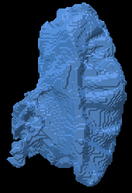Count 36247, 13121 Vertices, 26238 Triangles
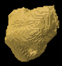Count 3620, 2598 Vertices, 5180 Triangles
UCSF-PDGM-0409
Glioblastoma, IDH-wildtype
alive
OS: 1167.0
Count 72252, 35683 Vertices, 71778 Triangles
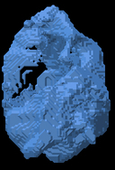Count 36284, 26905 Vertices, 53950 Triangles
Count 27754, 14257 Vertices, 28622 Triangles

UCSF-PDGM-0405
Glioblastoma, IDH-wildtype
alive
OS: 319.0
Count 90553, 43537 Vertices, 87870 Triangles
Count 32173, 21652 Vertices, 43428 Triangles

Count 14570, 10623 Vertices, 21338 Triangles
UCSF-PDGM-0404
Glioblastoma, IDH-wildtype
alive
OS: 191.0
Count 36865, 30988 Vertices, 62712 Triangles

Count 45294, 43235 Vertices, 87074 Triangles
Count 37534, 25967 Vertices, 52422 Triangles
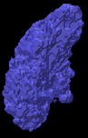UCSF-PDGM-0403
Glioblastoma, IDH-wildtype
alive
OS: 69.0
Count 41433, 28053 Vertices, 56938 Triangles

Count 44569, 17954 Vertices, 35928 Triangles

Count 5745, 6119 Vertices, 12250 Triangles
UCSF-PDGM-0400
Glioblastoma, IDH-wildtype
alive
OS: 244.0
Count 20654, 20666 Vertices, 42148 Triangles
Count 32983, 22576 Vertices, 45224 Triangles
Count 15850, 9601 Vertices, 19178 Triangles

UCSF-PDGM-0399
Glioblastoma, IDH-wildtype
alive
OS: 548.0
Count 95490, 43788 Vertices, 88892 Triangles

Count 23711, 19824 Vertices, 39660 Triangles

Count 16174, 8457 Vertices, 16934 Triangles

UCSF-PDGM-0394
Glioblastoma, IDH-wildtype
alive
OS: 565.0
Count 75630, 27782 Vertices, 55676 Triangles

Count 13926, 10113 Vertices, 20346 Triangles

Count 5167, 4114 Vertices, 8268 Triangles
UCSF-PDGM-0464
Glioblastoma, IDH-wildtype
alive
OS: 10.0
Count 14524, 20470 Vertices, 42044 Triangles
Count 21449, 10266 Vertices, 20528 Triangles
Count 118, 283 Vertices, 554 Triangles
UCSF-PDGM-0463
Glioblastoma, IDH-wildtype
alive
OS: 108.0
Count 17629, 16649 Vertices, 33662 Triangles
Count 15949, 12859 Vertices, 25782 Triangles

Count 9804, 5766 Vertices, 11544 Triangles

UCSF-PDGM-0461
Glioblastoma, IDH-wildtype
alive
OS: 66.0
Count 101294, 41631 Vertices, 83398 Triangles
Count 12702, 7206 Vertices, 14412 Triangles

Count 3092, 2253 Vertices, 4510 Triangles

UCSF-PDGM-0459
Glioblastoma, IDH-wildtype
alive
OS: 78.0
Count 55, 152 Vertices, 304 Triangles
Count 23527, 17700 Vertices, 35664 Triangles
Count 9459, 8668 Vertices, 17608 Triangles

UCSF-PDGM-0454
Glioblastoma, IDH-wildtype
alive
OS: 285.0
Count 75489, 36404 Vertices, 73192 Triangles

Count 21058, 20515 Vertices, 41298 Triangles

Count 15105, 9728 Vertices, 19500 Triangles

UCSF-PDGM-0451
Glioblastoma, IDH-wildtype
alive
OS: 512.0
Count 73548, 24155 Vertices, 48542 Triangles
Count 8378, 6944 Vertices, 13896 Triangles

Count 4679, 2478 Vertices, 4952 Triangles

UCSF-PDGM-0066
Glioblastoma, IDH-wildtype
alive
OS: 1913.0
Count 2840, 2982 Vertices, 5988 Triangles

Count 800, 1014 Vertices, 2020 Triangles

Count 105, 186 Vertices, 368 Triangles
UCSF-PDGM-0103
Glioblastoma, IDH-wildtype
alive
OS: 1694.0
Count 94499, 30567 Vertices, 61294 Triangles

Count 15157, 10272 Vertices, 20532 Triangles

Count 9659, 3822 Vertices, 7644 Triangles
UCSF-PDGM-0059
Glioblastoma, IDH-wildtype
alive
OS: 223.0
Count 87856, 38467 Vertices, 77890 Triangles

Count 39607, 31344 Vertices, 62964 Triangles
Count 29542, 14590 Vertices, 29288 Triangles
UCSF-PDGM-0058
Glioblastoma, IDH-wildtype
alive
OS: 1540.0
Count 93953, 31090 Vertices, 62260 Triangles
Count 10080, 6898 Vertices, 13772 Triangles

Count 3513, 2471 Vertices, 4922 Triangles
UCSF-PDGM-0057
Glioblastoma, IDH-wildtype
alive
OS: 224.0
Count 12836, 17535 Vertices, 36306 Triangles

Count 32731, 20693 Vertices, 41462 Triangles
Count 11738, 9652 Vertices, 19388 Triangles

UCSF-PDGM-0055
Glioblastoma, IDH-wildtype
alive
OS: 1328.0
Count 60815, 19303 Vertices, 38634 Triangles
Count 9353, 4096 Vertices, 8172 Triangles

Count 16, 64 Vertices, 116 Triangles

UCSF-PDGM-0053
Glioblastoma, IDH-wildtype
alive
OS: 575.0
Count 65618, 42587 Vertices, 85746 Triangles
Count 64578, 39312 Vertices, 78924 Triangles
Count 30007, 19274 Vertices, 38740 Triangles

UCSF-PDGM-0146
Glioblastoma, IDH-wildtype
alive
OS: 1392.0
Count 103028, 31306 Vertices, 62640 Triangles
Count 11657, 10399 Vertices, 21046 Triangles

Count 5578, 3752 Vertices, 7504 Triangles
UCSF-PDGM-0134
Glioblastoma, IDH-wildtype
alive
OS: 288.0
Count 53073, 29671 Vertices, 59574 Triangles
Count 30331, 20772 Vertices, 41608 Triangles
Count 12143, 9436 Vertices, 18912 Triangles
UCSF-PDGM-0049
Glioblastoma, IDH-wildtype
alive
OS: 721.0
Count 14457, 16612 Vertices, 33812 Triangles
Count 55341, 40014 Vertices, 80772 Triangles

Count 25004, 23350 Vertices, 47064 Triangles

UCSF-PDGM-0157
Glioblastoma, IDH-wildtype
alive
OS: 902.0
Count 23880, 22091 Vertices, 45010 Triangles
Count 35305, 25438 Vertices, 50888 Triangles

Count 27639, 12972 Vertices, 25976 Triangles

UCSF-PDGM-0041
Glioblastoma, IDH-wildtype
alive
OS: 128.0
Count 176448, 62847 Vertices, 125866 Triangles
Count 32547, 20541 Vertices, 41038 Triangles
Count 10986, 9229 Vertices, 18498 Triangles
UCSF-PDGM-0039
Glioblastoma, IDH-wildtype
alive
OS: 134.0
Count 95526, 22164 Vertices, 44368 Triangles

Count 5680, 3310 Vertices, 6608 Triangles

Count 245, 450 Vertices, 884 Triangles
UCSF-PDGM-0037
Glioblastoma, IDH-wildtype
alive
OS: 460.0
Count 41119, 23040 Vertices, 46756 Triangles

Count 18859, 11388 Vertices, 22764 Triangles
Count 8120, 4212 Vertices, 8420 Triangles

UCSF-PDGM-0047
Glioblastoma, IDH-wildtype
alive
OS: 385.0
Count 11785, 15101 Vertices, 31202 Triangles

Count 18553, 18048 Vertices, 36476 Triangles
Count 10998, 10513 Vertices, 21314 Triangles
UCSF-PDGM-0131
Glioblastoma, IDH-wildtype
alive
OS: 410.0
Count 26224, 15379 Vertices, 31214 Triangles

Count 5908, 4417 Vertices, 8822 Triangles
Count 1628, 1464 Vertices, 2920 Triangles

UCSF-PDGM-0130
Glioblastoma, IDH-wildtype
alive
OS: 1440.0
Count 33031, 23872 Vertices, 48184 Triangles

Count 13106, 15458 Vertices, 31228 Triangles

Count 9005, 6606 Vertices, 13256 Triangles

UCSF-PDGM-0107
Glioblastoma, IDH-wildtype
alive
OS: 175.0
Count 61766, 27423 Vertices, 55022 Triangles

Count 14792, 11616 Vertices, 23304 Triangles

Count 5000, 3601 Vertices, 7182 Triangles

UCSF-PDGM-0204
Glioblastoma, IDH-wildtype
alive
OS: 428.0
Count 14168, 12823 Vertices, 26062 Triangles
Count 6915, 6457 Vertices, 12910 Triangles
Count 2910, 2336 Vertices, 4664 Triangles

UCSF-PDGM-0094
Glioblastoma, IDH-wildtype
alive
OS: 161.0
Count 93739, 53407 Vertices, 108350 Triangles

Count 53555, 33684 Vertices, 67396 Triangles
Count 41739, 13360 Vertices, 26732 Triangles
UCSF-PDGM-0088
Glioblastoma, IDH-wildtype
alive
OS: 1797.0
Count 18135, 6423 Vertices, 12834 Triangles
Count 311, 520 Vertices, 1024 Triangles
Count 16, 48 Vertices, 92 Triangles
UCSF-PDGM-0086
Glioblastoma, IDH-wildtype
alive
OS: 266.0
Count 14085, 15620 Vertices, 32224 Triangles

Count 18855, 9188 Vertices, 18400 Triangles
Count 2146, 2565 Vertices, 5146 Triangles
UCSF-PDGM-0085
Glioblastoma, IDH-wildtype
alive
OS: 232.0
Count 97579, 24754 Vertices, 49608 Triangles

Count 1727, 1587 Vertices, 3178 Triangles
Count 79, 224 Vertices, 432 Triangles

UCSF-PDGM-0116
Glioblastoma, IDH-wildtype
alive
OS: 1611.0
Count 85957, 35161 Vertices, 70762 Triangles

Count 26448, 18829 Vertices, 37678 Triangles
Count 25506, 7961 Vertices, 15942 Triangles
UCSF-PDGM-0084
Glioblastoma, IDH-wildtype
alive
OS: 902.0
Count 22989, 13919 Vertices, 27966 Triangles

Count 7857, 7145 Vertices, 14326 Triangles

Count 3344, 3274 Vertices, 6548 Triangles

UCSF-PDGM-0082
Glioblastoma, IDH-wildtype
alive
OS: 6.0
Count 47941, 30087 Vertices, 60758 Triangles

Count 59318, 26557 Vertices, 53230 Triangles

Count 21843, 10805 Vertices, 21574 Triangles

UCSF-PDGM-0076
Glioblastoma, IDH-wildtype
alive
OS: 108.0
Count 22833, 26123 Vertices, 52974 Triangles

Count 34152, 29701 Vertices, 59714 Triangles
Count 37029, 13914 Vertices, 27872 Triangles

UCSF-PDGM-0074
Glioblastoma, IDH-wildtype
alive
OS: 583.0
Count 38919, 24392 Vertices, 49664 Triangles
Count 26028, 15078 Vertices, 30168 Triangles

Count 2123, 3550 Vertices, 7096 Triangles

UCSF-PDGM-0123
Glioblastoma, IDH-wildtype
alive
OS: 485.0
Count 150219, 43645 Vertices, 87478 Triangles

Count 37265, 23666 Vertices, 47480 Triangles

Count 18163, 10683 Vertices, 21502 Triangles

UCSF-PDGM-0072
Glioblastoma, IDH-wildtype
alive
OS: 184.0
Count 14714, 11849 Vertices, 23886 Triangles

Count 33288, 23079 Vertices, 46298 Triangles

Count 15621, 11437 Vertices, 22990 Triangles
UCSF-PDGM-0127
Glioblastoma, IDH-wildtype
alive
OS: 1296.0
Count 167382, 51659 Vertices, 104034 Triangles

Count 33064, 23993 Vertices, 48218 Triangles

Count 24382, 11917 Vertices, 23882 Triangles
UCSF-PDGM-0128
Glioblastoma, IDH-wildtype
alive
OS: 645.0
Count 51601, 30481 Vertices, 61622 Triangles

Count 19033, 17641 Vertices, 35362 Triangles

Count 19743, 8474 Vertices, 16988 Triangles
UCSF-PDGM-0167
Glioblastoma, IDH-wildtype
alive
OS: 1196.0
Count 62162, 32199 Vertices, 64842 Triangles

Count 26383, 23033 Vertices, 46362 Triangles

Count 16250, 12918 Vertices, 26048 Triangles
UCSF-PDGM-0036
Glioblastoma, IDH-wildtype
alive
OS: 1673.0
Count 25111, 16130 Vertices, 32360 Triangles

Count 5150, 3562 Vertices, 7132 Triangles

Count 296, 588 Vertices, 1172 Triangles
UCSF-PDGM-0034
Glioblastoma, IDH-wildtype
alive
OS: 52.0
Count 63392, 31221 Vertices, 63178 Triangles

Count 36744, 22310 Vertices, 44596 Triangles
Count 25109, 9425 Vertices, 18750 Triangles

UCSF-PDGM-0185
Glioblastoma, IDH-wildtype
alive
OS: 1142.0
Count 114588, 46933 Vertices, 94302 Triangles

Count 33037, 24166 Vertices, 48512 Triangles
Count 15191, 12285 Vertices, 24682 Triangles

UCSF-PDGM-0026
Glioblastoma, IDH-wildtype
alive
OS: 236.0
Count 41608, 26500 Vertices, 53180 Triangles

Count 19207, 11981 Vertices, 23982 Triangles

Count 5737, 4178 Vertices, 8340 Triangles

UCSF-PDGM-0189
Glioblastoma, IDH-wildtype
alive
OS: 416.0
Count 19476, 13097 Vertices, 26390 Triangles
Count 9895, 7897 Vertices, 15990 Triangles
Count 1469, 3193 Vertices, 6490 Triangles
UCSF-PDGM-0195
Glioblastoma, IDH-wildtype
alive
OS: 304.0
Count 42559, 27574 Vertices, 55864 Triangles
Count 36255, 29765 Vertices, 59938 Triangles

Count 22127, 16920 Vertices, 34160 Triangles

UCSF-PDGM-0183
Glioblastoma, IDH-wildtype
alive
OS: 1163.0
Count 29728, 22408 Vertices, 45340 Triangles

Count 19821, 19834 Vertices, 39784 Triangles

Count 30208, 9086 Vertices, 18192 Triangles
UCSF-PDGM-0020
Glioblastoma, IDH-wildtype
alive
OS: 551.0
Count 76293, 28523 Vertices, 57202 Triangles

Count 9994, 7518 Vertices, 15068 Triangles

Count 2086, 3171 Vertices, 6402 Triangles

UCSF-PDGM-0016
Glioblastoma, IDH-wildtype
alive
OS: 14.0
Count 11028, 13719 Vertices, 27566 Triangles

Count 55839, 56452 Vertices, 114832 Triangles

Count 33619, 40058 Vertices, 81764 Triangles

UCSF-PDGM-0012
Glioblastoma, IDH-wildtype
alive
OS: 15.0
Count 106796, 47128 Vertices, 95016 Triangles
Count 48868, 29353 Vertices, 58926 Triangles

Count 25479, 14723 Vertices, 29542 Triangles

UCSF-PDGM-0201
Glioblastoma, IDH-wildtype
alive
OS: 1015.0
Count 151278, 52846 Vertices, 106356 Triangles
Count 47755, 23110 Vertices, 46208 Triangles

Count 21383, 9859 Vertices, 19690 Triangles

UCSF-PDGM-0011
Glioblastoma, IDH-wildtype
alive
OS: 133.0
Count 83475, 37207 Vertices, 74906 Triangles
Count 21537, 10969 Vertices, 21926 Triangles
Count 5068, 3640 Vertices, 7268 Triangles

UCSF-PDGM-0010
Glioblastoma, IDH-wildtype
alive
OS: 17.0
Count 97074, 39052 Vertices, 78308 Triangles

Count 15320, 12727 Vertices, 25526 Triangles
Count 5323, 5163 Vertices, 10306 Triangles
UCSF-PDGM-0203
Glioblastoma, IDH-wildtype
alive
OS: 421.0
Count 12329, 4882 Vertices, 9748 Triangles
Count 157, 230 Vertices, 456 Triangles
Count 0, 0 Vertices, 0 Triangles

UCSF-PDGM-0018
Glioblastoma, IDH-wildtype
alive
OS: 1449.0
Count 13295, 11908 Vertices, 24048 Triangles

Count 5108, 3494 Vertices, 6988 Triangles

Count 418, 751 Vertices, 1494 Triangles
UCSF-PDGM-0102
Glioblastoma, IDH-wildtype
alive
OS: 798.0
Count 6649, 6995 Vertices, 14410 Triangles

Count 5885, 3774 Vertices, 7540 Triangles

Count 839, 1006 Vertices, 2008 Triangles
UCSF-PDGM-0179
Glioblastoma, IDH-wildtype
alive
OS: 1201.0
Count 60468, 27455 Vertices, 55130 Triangles

Count 11140, 10368 Vertices, 20796 Triangles

Count 8842, 4323 Vertices, 8658 Triangles

UCSF-PDGM-0032
Glioblastoma, IDH-wildtype
alive
OS: 105.0
Count 41610, 26513 Vertices, 53458 Triangles
Count 24196, 17526 Vertices, 35212 Triangles

Count 7339, 8407 Vertices, 16914 Triangles
UCSF-PDGM-0030
Glioblastoma, IDH-wildtype
alive
OS: 17.0
Count 13699, 10197 Vertices, 20418 Triangles

Count 39207, 27682 Vertices, 55732 Triangles
Count 13263, 11574 Vertices, 23396 Triangles
UCSF-PDGM-0422
Glioblastoma, IDH-wildtype
dead
OS: 264.0
Count 24457, 13112 Vertices, 26268 Triangles

Count 1803, 1658 Vertices, 3316 Triangles

Count 95, 218 Vertices, 424 Triangles
UCSF-PDGM-0506
Glioblastoma, IDH-wildtype
dead
OS: 86.0
Count 38961, 29243 Vertices, 59086 Triangles

Count 7022, 6467 Vertices, 13018 Triangles

Count 2159, 2765 Vertices, 5622 Triangles

UCSF-PDGM-0425
Glioblastoma, IDH-wildtype
dead
OS: 605.0
Count 30132, 18496 Vertices, 37204 Triangles

Count 24605, 20288 Vertices, 40744 Triangles
Count 16824, 10199 Vertices, 20502 Triangles

UCSF-PDGM-0532
Glioblastoma, IDH-wildtype
dead
OS: 322.0
Count 21834, 14993 Vertices, 30034 Triangles
Count 4019, 5462 Vertices, 11016 Triangles

Count 4670, 2298 Vertices, 4588 Triangles

UCSF-PDGM-0083
Glioblastoma, IDH-wildtype
dead
OS: 260.0
Count 13196, 6839 Vertices, 13738 Triangles

Count 1801, 1502 Vertices, 2992 Triangles
Count 142, 247 Vertices, 490 Triangles
UCSF-PDGM-0428
Glioblastoma, IDH-wildtype
dead
OS: 422.0
Count 20460, 14413 Vertices, 29082 Triangles

Count 9735, 6134 Vertices, 12280 Triangles

Count 1729, 1997 Vertices, 4010 Triangles

UCSF-PDGM-0429
Glioblastoma, IDH-wildtype
dead
OS: 624.0
Count 36799, 13608 Vertices, 27208 Triangles

Count 6651, 5125 Vertices, 10262 Triangles

Count 1519, 1813 Vertices, 3634 Triangles

UCSF-PDGM-0033
Glioblastoma, IDH-wildtype
dead
OS: 1489.0
Count 109080, 37020 Vertices, 74192 Triangles
Count 33741, 18793 Vertices, 37662 Triangles
Count 13900, 8149 Vertices, 16410 Triangles

UCSF-PDGM-0430
Glioblastoma, IDH-wildtype
dead
OS: 406.0
Count 12742, 10732 Vertices, 21632 Triangles

Count 5530, 5216 Vertices, 10432 Triangles

Count 1266, 1812 Vertices, 3644 Triangles

UCSF-PDGM-0013
Glioblastoma, IDH-wildtype
dead
OS: 322.0
Count 56234, 32147 Vertices, 64934 Triangles
Count 43755, 19318 Vertices, 38668 Triangles

Count 4454, 6074 Vertices, 12104 Triangles
UCSF-PDGM-0433
Glioblastoma, IDH-wildtype
dead
OS: 205.0
Count 11280, 10061 Vertices, 20574 Triangles
Count 8147, 4769 Vertices, 9530 Triangles

Count 763, 1145 Vertices, 2270 Triangles

UCSF-PDGM-0434
Glioblastoma, IDH-wildtype
dead
OS: 134.0
Count 45218, 21233 Vertices, 42758 Triangles
Count 14367, 16277 Vertices, 32822 Triangles

Count 16285, 8361 Vertices, 16818 Triangles
UCSF-PDGM-0435
Glioblastoma, IDH-wildtype
dead
OS: 183.0
Count 27255, 22178 Vertices, 44856 Triangles
Count 18324, 12763 Vertices, 25590 Triangles

Count 7632, 5524 Vertices, 11096 Triangles

UCSF-PDGM-0080
Glioblastoma, IDH-wildtype
dead
OS: 253.0
Count 31178, 15133 Vertices, 30362 Triangles

Count 5665, 4601 Vertices, 9206 Triangles
Count 1871, 1748 Vertices, 3520 Triangles

UCSF-PDGM-0079
Glioblastoma, IDH-wildtype
dead
OS: 560.0
Count 52063, 25784 Vertices, 51848 Triangles
Count 27233, 8740 Vertices, 17456 Triangles
Count 510, 904 Vertices, 1784 Triangles

UCSF-PDGM-0078
Glioblastoma, IDH-wildtype
dead
OS: 354.0
Count 45648, 15840 Vertices, 31756 Triangles
Count 5119, 3666 Vertices, 7332 Triangles

Count 1076, 1154 Vertices, 2312 Triangles
UCSF-PDGM-0077
Glioblastoma, IDH-wildtype
dead
OS: 142.0
Count 139678, 46904 Vertices, 94608 Triangles
Count 36917, 19771 Vertices, 39534 Triangles

Count 20623, 7970 Vertices, 15940 Triangles

UCSF-PDGM-0014
Glioblastoma, IDH-wildtype
dead
OS: 313.0
Count 155695, 53045 Vertices, 106194 Triangles

Count 23651, 17422 Vertices, 34912 Triangles

Count 11248, 7377 Vertices, 14822 Triangles

UCSF-PDGM-0075
Glioblastoma, IDH-wildtype
dead
OS: 421.0
Count 10157, 11837 Vertices, 24018 Triangles

Count 5569, 7008 Vertices, 14140 Triangles

Count 3738, 2508 Vertices, 5000 Triangles
UCSF-PDGM-0087
Glioblastoma, IDH-wildtype
dead
OS: 406.0
Count 44950, 28106 Vertices, 56520 Triangles

Count 33782, 22976 Vertices, 46044 Triangles

Count 13270, 12028 Vertices, 24124 Triangles

UCSF-PDGM-0009
Glioblastoma, IDH-wildtype
dead
OS: 389.0
Count 98689, 35500 Vertices, 71404 Triangles
Count 15417, 9644 Vertices, 19348 Triangles

Count 5318, 3458 Vertices, 6892 Triangles
UCSF-PDGM-0513
Glioblastoma, IDH-wildtype
dead
OS: 80.0
Count 77557, 45902 Vertices, 92564 Triangles
Count 51056, 34331 Vertices, 69222 Triangles

Count 26506, 18993 Vertices, 38274 Triangles
UCSF-PDGM-0418
Glioblastoma, IDH-wildtype
dead
OS: 657.0
Count 61463, 21979 Vertices, 44042 Triangles

Count 7356, 5643 Vertices, 11282 Triangles

Count 1427, 1545 Vertices, 3094 Triangles

UCSF-PDGM-0395
Glioblastoma, IDH-wildtype
dead
OS: 785.0
Count 24989, 12669 Vertices, 25346 Triangles
Count 820, 672 Vertices, 1340 Triangles
Count 0, 0 Vertices, 0 Triangles

UCSF-PDGM-0396
Glioblastoma, IDH-wildtype
dead
OS: 1084.0
Count 88470, 28014 Vertices, 56132 Triangles
Count 2037, 1939 Vertices, 3902 Triangles

Count 270, 484 Vertices, 976 Triangles

UCSF-PDGM-0397
Glioblastoma, IDH-wildtype
dead
OS: 19.0
Count 38403, 17586 Vertices, 35476 Triangles

Count 8703, 7909 Vertices, 15854 Triangles

Count 3611, 3216 Vertices, 6452 Triangles
UCSF-PDGM-0398
Glioblastoma, IDH-wildtype
dead
OS: 753.0
Count 87738, 23601 Vertices, 47148 Triangles

Count 5805, 5730 Vertices, 11450 Triangles

Count 4339, 2201 Vertices, 4398 Triangles
UCSF-PDGM-0101
Glioblastoma, IDH-wildtype
dead
OS: 705.0
Count 88578, 27648 Vertices, 55288 Triangles

Count 7824, 5154 Vertices, 10364 Triangles

Count 1233, 1870 Vertices, 3808 Triangles
UCSF-PDGM-0502
Glioblastoma, IDH-wildtype
dead
OS: 59.0
Count 4187, 6452 Vertices, 13252 Triangles

Count 13537, 21779 Vertices, 44974 Triangles

Count 40050, 10255 Vertices, 20506 Triangles

UCSF-PDGM-0099
Glioblastoma, IDH-wildtype
dead
OS: 472.0
Count 6721, 4999 Vertices, 9978 Triangles
Count 13655, 8125 Vertices, 16322 Triangles

Count 869, 1132 Vertices, 2256 Triangles
UCSF-PDGM-0401
Glioblastoma, IDH-wildtype
dead
OS: 114.0
Count 77272, 26544 Vertices, 53156 Triangles
Count 5677, 3197 Vertices, 6394 Triangles

Count 286, 554 Vertices, 1120 Triangles

UCSF-PDGM-0402
Glioblastoma, IDH-wildtype
dead
OS: 90.0
Count 40826, 20882 Vertices, 42236 Triangles

Count 13872, 10647 Vertices, 21318 Triangles

Count 3082, 3396 Vertices, 6804 Triangles

UCSF-PDGM-0097
Glioblastoma, IDH-wildtype
dead
OS: 110.0
Count 47635, 35320 Vertices, 71740 Triangles
Count 47855, 24039 Vertices, 48078 Triangles

Count 17459, 8103 Vertices, 16174 Triangles

UCSF-PDGM-0096
Glioblastoma, IDH-wildtype
dead
OS: 591.0
Count 77409, 33052 Vertices, 66508 Triangles

Count 26896, 21447 Vertices, 42950 Triangles

Count 18073, 9472 Vertices, 18960 Triangles
UCSF-PDGM-0005
Glioblastoma, IDH-wildtype
dead
OS: 274.0
Count 23818, 13624 Vertices, 27244 Triangles

Count 2974, 3702 Vertices, 7404 Triangles
Count 1627, 1332 Vertices, 2648 Triangles
UCSF-PDGM-0406
Glioblastoma, IDH-wildtype
dead
OS: 169.0
Count 80497, 43887 Vertices, 88302 Triangles
Count 44890, 33341 Vertices, 66898 Triangles

Count 36188, 16849 Vertices, 33834 Triangles
UCSF-PDGM-0007
Glioblastoma, IDH-wildtype
dead
OS: 417.0
Count 198267, 63400 Vertices, 127268 Triangles

Count 19368, 13953 Vertices, 28082 Triangles

Count 7900, 5775 Vertices, 11594 Triangles

UCSF-PDGM-0093
Glioblastoma, IDH-wildtype
dead
OS: 994.0
Count 27873, 23135 Vertices, 47330 Triangles

Count 20409, 14437 Vertices, 28882 Triangles
Count 11639, 6515 Vertices, 13042 Triangles
UCSF-PDGM-0410
Glioblastoma, IDH-wildtype
dead
OS: 366.0
Count 65029, 32538 Vertices, 65816 Triangles
Count 27670, 23213 Vertices, 46490 Triangles
Count 19462, 12431 Vertices, 24930 Triangles
UCSF-PDGM-0092
Glioblastoma, IDH-wildtype
dead
OS: 567.0
Count 25588, 13983 Vertices, 28062 Triangles
Count 1480, 1578 Vertices, 3148 Triangles
Count 385, 450 Vertices, 896 Triangles

UCSF-PDGM-0412
Glioblastoma, IDH-wildtype
dead
OS: 239.0
Count 43772, 44447 Vertices, 91102 Triangles
Count 38901, 25837 Vertices, 51650 Triangles

Count 5579, 5430 Vertices, 10816 Triangles
UCSF-PDGM-0413
Glioblastoma, IDH-wildtype
dead
OS: 2144.0
Count 81197, 34723 Vertices, 69670 Triangles
Count 19700, 11516 Vertices, 22988 Triangles
Count 3009, 4624 Vertices, 9208 Triangles

UCSF-PDGM-0091
Glioblastoma, IDH-wildtype
dead
OS: 463.0
Count 5316, 7266 Vertices, 15096 Triangles
Count 6786, 5472 Vertices, 10992 Triangles
Count 2149, 2117 Vertices, 4242 Triangles

UCSF-PDGM-0090
Glioblastoma, IDH-wildtype
dead
OS: 749.0
Count 131307, 56060 Vertices, 112936 Triangles

Count 61830, 42347 Vertices, 85062 Triangles
Count 47236, 22260 Vertices, 44772 Triangles

UCSF-PDGM-0416
Glioblastoma, IDH-wildtype
dead
OS: 484.0
Count 22540, 17268 Vertices, 35240 Triangles
Count 16817, 9690 Vertices, 19476 Triangles

Count 789, 1221 Vertices, 2434 Triangles
UCSF-PDGM-0417
Glioblastoma, IDH-wildtype
dead
OS: 334.0
Count 84458, 41545 Vertices, 83432 Triangles
Count 28868, 23546 Vertices, 47104 Triangles

Count 40282, 10680 Vertices, 21376 Triangles

UCSF-PDGM-0095
Glioblastoma, IDH-wildtype
dead
OS: 777.0
Count 26179, 13091 Vertices, 26470 Triangles

Count 6841, 4175 Vertices, 8346 Triangles

Count 772, 738 Vertices, 1472 Triangles

UCSF-PDGM-0008
Glioblastoma, IDH-wildtype
dead
OS: 185.0
Count 83082, 44520 Vertices, 89944 Triangles
Count 42573, 40312 Vertices, 81288 Triangles

Count 42956, 23832 Vertices, 48156 Triangles
UCSF-PDGM-0015
Glioblastoma, IDH-wildtype
dead
OS: 54.0
Count 81619, 42050 Vertices, 84364 Triangles
Count 6769, 5556 Vertices, 11168 Triangles

Count 872, 1677 Vertices, 3350 Triangles

UCSF-PDGM-0038
Glioblastoma, IDH-wildtype
dead
OS: 152.0
Count 154682, 56189 Vertices, 112922 Triangles
Count 31534, 23698 Vertices, 47416 Triangles

Count 27154, 11296 Vertices, 22592 Triangles

UCSF-PDGM-0466
Glioblastoma, IDH-wildtype
dead
OS: 287.0
Count 189048, 63999 Vertices, 128050 Triangles

Count 159, 220 Vertices, 436 Triangles
Count 0, 0 Vertices, 0 Triangles

UCSF-PDGM-0467
Glioblastoma, IDH-wildtype
dead
OS: 169.0
Count 85909, 42862 Vertices, 85904 Triangles
Count 5145, 3261 Vertices, 6506 Triangles
Count 74, 168 Vertices, 328 Triangles
UCSF-PDGM-0024
Glioblastoma, IDH-wildtype
dead
OS: 653.0
Count 24534, 22494 Vertices, 45892 Triangles
Count 33421, 22505 Vertices, 45038 Triangles

Count 16346, 11884 Vertices, 23796 Triangles
UCSF-PDGM-0470
Glioblastoma, IDH-wildtype
dead
OS: 70.0
Count 66992, 29696 Vertices, 59908 Triangles
Count 17990, 8740 Vertices, 17414 Triangles
Count 594, 958 Vertices, 1908 Triangles
UCSF-PDGM-0471
Glioblastoma, IDH-wildtype
dead
OS: 319.0
Count 137179, 49832 Vertices, 100072 Triangles
Count 16316, 12185 Vertices, 24462 Triangles
Count 1217, 1494 Vertices, 2976 Triangles

UCSF-PDGM-0472
Glioblastoma, IDH-wildtype
dead
OS: 38.0
Count 51788, 39664 Vertices, 80788 Triangles

Count 20788, 17251 Vertices, 34678 Triangles
Count 4921, 6589 Vertices, 13286 Triangles
UCSF-PDGM-0025
Glioblastoma, IDH-wildtype
dead
OS: 465.0
Count 67531, 37439 Vertices, 75538 Triangles

Count 34307, 32619 Vertices, 65418 Triangles
Count 60562, 16610 Vertices, 33160 Triangles

UCSF-PDGM-0042
Glioblastoma, IDH-wildtype
dead
OS: 635.0
Count 11200, 8080 Vertices, 16528 Triangles
Count 4835, 3378 Vertices, 6768 Triangles

Count 601, 1095 Vertices, 2226 Triangles
UCSF-PDGM-0056
Glioblastoma, IDH-wildtype
dead
OS: 207.0
Count 5251, 13350 Vertices, 28632 Triangles
Count 19008, 14367 Vertices, 29014 Triangles

Count 4155, 7386 Vertices, 15080 Triangles

UCSF-PDGM-0029
Glioblastoma, IDH-wildtype
dead
OS: 75.0
Count 55786, 24578 Vertices, 49428 Triangles

Count 9338, 7507 Vertices, 14990 Triangles
Count 987, 1333 Vertices, 2658 Triangles

UCSF-PDGM-0515
Glioblastoma, IDH-wildtype
dead
OS: 45.0
Count 51347, 37520 Vertices, 75028 Triangles
Count 25474, 22547 Vertices, 45194 Triangles

Count 20612, 10767 Vertices, 21582 Triangles

UCSF-PDGM-0479
Glioblastoma, IDH-wildtype
dead
OS: 475.0
Count 78356, 43561 Vertices, 87522 Triangles

Count 39664, 23371 Vertices, 46882 Triangles
Count 10879, 9706 Vertices, 19548 Triangles

UCSF-PDGM-0043
Glioblastoma, IDH-wildtype
dead
OS: 1116.0
Count 16755, 13382 Vertices, 27444 Triangles
Count 7997, 6556 Vertices, 13092 Triangles

Count 2658, 2541 Vertices, 5070 Triangles
UCSF-PDGM-0480
Glioblastoma, IDH-wildtype
dead
OS: 54.0
Count 134237, 54682 Vertices, 109980 Triangles

Count 34578, 16182 Vertices, 32316 Triangles

Count 4688, 5488 Vertices, 10968 Triangles
UCSF-PDGM-0050
Glioblastoma, IDH-wildtype
dead
OS: 554.0
Count 67093, 25132 Vertices, 50364 Triangles

Count 14189, 9844 Vertices, 19792 Triangles
Count 3399, 4601 Vertices, 9302 Triangles
UCSF-PDGM-0027
Glioblastoma, IDH-wildtype
dead
OS: 298.0
Count 51246, 26950 Vertices, 54064 Triangles

Count 12694, 11698 Vertices, 23488 Triangles
Count 10606, 5271 Vertices, 10574 Triangles
UCSF-PDGM-0484
Glioblastoma, IDH-wildtype
dead
OS: 149.0
Count 12003, 11843 Vertices, 24270 Triangles
Count 10438, 8532 Vertices, 17104 Triangles

Count 4245, 3635 Vertices, 7266 Triangles

UCSF-PDGM-0048
Glioblastoma, IDH-wildtype
dead
OS: 54.0
Count 37949, 30850 Vertices, 62612 Triangles

Count 30972, 17533 Vertices, 35022 Triangles
Count 2635, 3379 Vertices, 6710 Triangles
UCSF-PDGM-0512
Glioblastoma, IDH-wildtype
dead
OS: 303.0
Count 69047, 46855 Vertices, 94650 Triangles

Count 28232, 30095 Vertices, 60326 Triangles
Count 59689, 14959 Vertices, 29990 Triangles
UCSF-PDGM-0487
Glioblastoma, IDH-wildtype
dead
OS: 111.0
Count 62073, 43661 Vertices, 88594 Triangles

Count 64888, 42880 Vertices, 86052 Triangles
Count 43050, 22237 Vertices, 44786 Triangles
UCSF-PDGM-0046
Glioblastoma, IDH-wildtype
dead
OS: 178.0
Count 78592, 34041 Vertices, 68518 Triangles
Count 27185, 16919 Vertices, 33782 Triangles
Count 12219, 7200 Vertices, 14228 Triangles
UCSF-PDGM-0528
Glioblastoma, IDH-wildtype
dead
OS: 54.0
Count 49467, 29091 Vertices, 58690 Triangles

Count 25569, 14559 Vertices, 29118 Triangles

Count 2955, 4206 Vertices, 8432 Triangles

UCSF-PDGM-0063
Glioblastoma, IDH-wildtype
dead
OS: 287.0
Count 195271, 51655 Vertices, 103886 Triangles

Count 12695, 9798 Vertices, 19696 Triangles
Count 5030, 4161 Vertices, 8354 Triangles

UCSF-PDGM-0462
Glioblastoma, IDH-wildtype
dead
OS: 84.0
Count 47465, 30135 Vertices, 61046 Triangles
Count 32576, 25800 Vertices, 51724 Triangles

Count 21324, 13863 Vertices, 27830 Triangles
UCSF-PDGM-0017
Glioblastoma, IDH-wildtype
dead
OS: 241.0
Count 57773, 25868 Vertices, 52596 Triangles
Count 24252, 16513 Vertices, 33018 Triangles
Count 17214, 6943 Vertices, 13882 Triangles

UCSF-PDGM-0071
Glioblastoma, IDH-wildtype
dead
OS: 315.0
Count 47511, 31993 Vertices, 64886 Triangles
Count 30271, 17043 Vertices, 34166 Triangles

Count 4186, 7937 Vertices, 15954 Triangles
UCSF-PDGM-0447
Glioblastoma, IDH-wildtype
dead
OS: 28.0
Count 132773, 73132 Vertices, 146162 Triangles
Count 8510, 4911 Vertices, 9794 Triangles
Count 128, 274 Vertices, 532 Triangles

UCSF-PDGM-0070
Glioblastoma, IDH-wildtype
dead
OS: 678.0
Count 86162, 38744 Vertices, 77760 Triangles
Count 49797, 34287 Vertices, 69010 Triangles

Count 28257, 16605 Vertices, 33262 Triangles

UCSF-PDGM-0450
Glioblastoma, IDH-wildtype
dead
OS: 369.0
Count 22915, 9936 Vertices, 19732 Triangles

Count 8361, 8717 Vertices, 17558 Triangles

Count 6668, 4037 Vertices, 8074 Triangles

UCSF-PDGM-0035
Glioblastoma, IDH-wildtype
dead
OS: 132.0
Count 93499, 42252 Vertices, 84788 Triangles

Count 33973, 22706 Vertices, 45440 Triangles

Count 11952, 10127 Vertices, 20242 Triangles

UCSF-PDGM-0069
Glioblastoma, IDH-wildtype
dead
OS: 245.0
Count 39508, 18284 Vertices, 36724 Triangles
Count 6489, 3777 Vertices, 7550 Triangles

Count 703, 871 Vertices, 1742 Triangles
UCSF-PDGM-0452
Glioblastoma, IDH-wildtype
dead
OS: 112.0
Count 118230, 65323 Vertices, 132326 Triangles

Count 47529, 33859 Vertices, 67898 Triangles
Count 11844, 9116 Vertices, 18196 Triangles

UCSF-PDGM-0453
Glioblastoma, IDH-wildtype
dead
OS: 96.0
Count 35715, 38895 Vertices, 77910 Triangles

Count 84287, 71872 Vertices, 144588 Triangles

Count 57189, 38663 Vertices, 77714 Triangles

UCSF-PDGM-0040
Glioblastoma, IDH-wildtype
dead
OS: 716.0
Count 84459, 32677 Vertices, 65478 Triangles

Count 23979, 17178 Vertices, 34496 Triangles
Count 10150, 7105 Vertices, 14342 Triangles
UCSF-PDGM-0068
Glioblastoma, IDH-wildtype
dead
OS: 336.0
Count 62652, 21210 Vertices, 42660 Triangles

Count 10808, 5135 Vertices, 10258 Triangles
Count 796, 874 Vertices, 1740 Triangles
UCSF-PDGM-0495
Glioblastoma, IDH-wildtype
dead
OS: 168.0
Count 5325, 5965 Vertices, 12110 Triangles
Count 4770, 3673 Vertices, 7342 Triangles

Count 1223, 1012 Vertices, 2020 Triangles
UCSF-PDGM-0455
Glioblastoma, IDH-wildtype
dead
OS: 165.0
Count 212801, 91873 Vertices, 184258 Triangles

Count 48621, 32688 Vertices, 65544 Triangles

Count 46911, 15111 Vertices, 30238 Triangles
UCSF-PDGM-0022
Glioblastoma, IDH-wildtype
dead
OS: 533.0
Count 47475, 27706 Vertices, 55736 Triangles
Count 52152, 31446 Vertices, 62988 Triangles
Count 23110, 11570 Vertices, 23176 Triangles

UCSF-PDGM-0023
Glioblastoma, IDH-wildtype
dead
OS: 1161.0
Count 24248, 14969 Vertices, 30170 Triangles

Count 8779, 7631 Vertices, 15266 Triangles
Count 4995, 3370 Vertices, 6772 Triangles

UCSF-PDGM-0457
Glioblastoma, IDH-wildtype
dead
OS: 241.0
Count 105920, 37246 Vertices, 74732 Triangles
Count 14910, 7676 Vertices, 15352 Triangles
Count 1163, 1789 Vertices, 3570 Triangles
UCSF-PDGM-0458
Glioblastoma, IDH-wildtype
dead
OS: 110.0
Count 64823, 33361 Vertices, 67006 Triangles

Count 41295, 23345 Vertices, 46722 Triangles
Count 20581, 9436 Vertices, 18880 Triangles
UCSF-PDGM-0067
Glioblastoma, IDH-wildtype
dead
OS: 299.0
Count 136581, 44406 Vertices, 88980 Triangles

Count 32208, 23740 Vertices, 47704 Triangles

Count 12835, 12266 Vertices, 24628 Triangles

UCSF-PDGM-0494
Glioblastoma, IDH-wildtype
dead
OS: 111.0
Count 38759, 23196 Vertices, 47004 Triangles

Count 18633, 12272 Vertices, 24600 Triangles
Count 6800, 5244 Vertices, 10544 Triangles

UCSF-PDGM-0065
Glioblastoma, IDH-wildtype
dead
OS: 167.0
Count 141884, 54084 Vertices, 109424 Triangles
Count 37976, 30932 Vertices, 61896 Triangles
Count 56568, 14139 Vertices, 28342 Triangles
UCSF-PDGM-0064
Glioblastoma, IDH-wildtype
dead
OS: 187.0
Count 21524, 15088 Vertices, 30524 Triangles
Count 13596, 10274 Vertices, 20552 Triangles

Count 7985, 4100 Vertices, 8216 Triangles
UCSF-PDGM-0019
Glioblastoma, IDH-wildtype
dead
OS: 719.0
Count 24225, 18317 Vertices, 36878 Triangles
Count 17916, 20968 Vertices, 42476 Triangles
Count 16510, 13001 Vertices, 26094 Triangles
UCSF-PDGM-0105
Glioblastoma, IDH-wildtype
dead
OS: 667.0
Count 27912, 23020 Vertices, 46920 Triangles

Count 17850, 22682 Vertices, 47060 Triangles

Count 31714, 11002 Vertices, 22016 Triangles
UCSF-PDGM-0154
Glioblastoma, IDH-wildtype
dead
OS: 394.0
Count 12787, 10617 Vertices, 21562 Triangles
Count 6182, 7784 Vertices, 15552 Triangles

Count 7767, 3056 Vertices, 6108 Triangles

UCSF-PDGM-0155
Glioblastoma, IDH-wildtype
dead
OS: 1132.0
Count 75319, 31756 Vertices, 63876 Triangles

Count 27953, 14288 Vertices, 28584 Triangles
Count 1305, 1929 Vertices, 3818 Triangles
UCSF-PDGM-0275
Glioblastoma, IDH-wildtype
dead
OS: 465.0
Count 14727, 17690 Vertices, 36076 Triangles
Count 45292, 27205 Vertices, 54486 Triangles
Count 24662, 12231 Vertices, 24474 Triangles

UCSF-PDGM-0158
Glioblastoma, IDH-wildtype
dead
OS: 130.0
Count 74206, 41242 Vertices, 83276 Triangles
Count 64203, 47265 Vertices, 95550 Triangles

Count 34099, 29725 Vertices, 60442 Triangles
UCSF-PDGM-0159
Glioblastoma, IDH-wildtype
dead
OS: 729.0
Count 129745, 53159 Vertices, 106650 Triangles

Count 30438, 25455 Vertices, 51414 Triangles

Count 14763, 15231 Vertices, 30906 Triangles

UCSF-PDGM-0153
Glioblastoma, IDH-wildtype
dead
OS: 316.0
Count 66185, 26918 Vertices, 54472 Triangles
Count 11264, 6394 Vertices, 12808 Triangles

Count 1391, 2031 Vertices, 4094 Triangles

UCSF-PDGM-0160
Glioblastoma, IDH-wildtype
dead
OS: 628.0
Count 25857, 15009 Vertices, 30078 Triangles
Count 10768, 9687 Vertices, 19458 Triangles
Count 6487, 4405 Vertices, 8834 Triangles

UCSF-PDGM-0163
Glioblastoma, IDH-wildtype
dead
OS: 194.0
Count 66590, 27798 Vertices, 55692 Triangles

Count 7981, 9330 Vertices, 18724 Triangles

Count 7175, 4114 Vertices, 8224 Triangles

UCSF-PDGM-0164
Glioblastoma, IDH-wildtype
dead
OS: 633.0
Count 39964, 19962 Vertices, 40212 Triangles
Count 10279, 10826 Vertices, 21764 Triangles
Count 6072, 5532 Vertices, 11160 Triangles
UCSF-PDGM-0165
Glioblastoma, IDH-wildtype
dead
OS: 60.0
Count 15495, 13059 Vertices, 26570 Triangles

Count 8810, 9214 Vertices, 18696 Triangles

Count 5605, 5005 Vertices, 10062 Triangles
UCSF-PDGM-0166
Glioblastoma, IDH-wildtype
dead
OS: 689.0
Count 57884, 29935 Vertices, 60394 Triangles

Count 24758, 19863 Vertices, 39866 Triangles

Count 18676, 10334 Vertices, 20728 Triangles

UCSF-PDGM-0168
Glioblastoma, IDH-wildtype
dead
OS: 418.0
Count 34426, 23607 Vertices, 47686 Triangles
Count 26030, 21289 Vertices, 42674 Triangles
Count 15803, 10643 Vertices, 21342 Triangles

UCSF-PDGM-0161
Glioblastoma, IDH-wildtype
dead
OS: 248.0
Count 122493, 45213 Vertices, 90626 Triangles

Count 23837, 15845 Vertices, 31766 Triangles
Count 12209, 7074 Vertices, 14200 Triangles

UCSF-PDGM-0169
Glioblastoma, IDH-wildtype
dead
OS: nan
Count 80287, 31156 Vertices, 62796 Triangles
Count 26497, 21376 Vertices, 43064 Triangles
Count 11258, 11431 Vertices, 23090 Triangles

UCSF-PDGM-0152
Glioblastoma, IDH-wildtype
dead
OS: 471.0
Count 31654, 18365 Vertices, 37242 Triangles
Count 12416, 10282 Vertices, 20556 Triangles
Count 9568, 3908 Vertices, 7812 Triangles
UCSF-PDGM-0150
Glioblastoma, IDH-wildtype
dead
OS: 1308.0
Count 28171, 28219 Vertices, 57366 Triangles

Count 23737, 21011 Vertices, 42014 Triangles
Count 36376, 9202 Vertices, 18396 Triangles

UCSF-PDGM-0142
Glioblastoma, IDH-wildtype
dead
OS: 430.0
Count 110664, 46988 Vertices, 94800 Triangles
Count 28827, 20194 Vertices, 40708 Triangles
Count 11208, 9942 Vertices, 19900 Triangles
UCSF-PDGM-0143
Glioblastoma, IDH-wildtype
dead
OS: 91.0
Count 117484, 42285 Vertices, 84942 Triangles
Count 24519, 16089 Vertices, 32310 Triangles
Count 4007, 4667 Vertices, 9402 Triangles
UCSF-PDGM-0144
Glioblastoma, IDH-wildtype
dead
OS: 142.0
Count 84041, 59036 Vertices, 118816 Triangles
Count 45584, 32673 Vertices, 65586 Triangles
Count 29208, 18270 Vertices, 36776 Triangles
UCSF-PDGM-0145
Glioblastoma, IDH-wildtype
dead
OS: 310.0
Count 106679, 40001 Vertices, 80302 Triangles

Count 27379, 18124 Vertices, 36344 Triangles

Count 14209, 8167 Vertices, 16386 Triangles
UCSF-PDGM-0297
Glioblastoma, IDH-wildtype
dead
OS: 357.0
Count 81808, 43196 Vertices, 88052 Triangles

Count 53651, 35293 Vertices, 70722 Triangles
Count 32623, 18767 Vertices, 37682 Triangles

UCSF-PDGM-0151
Glioblastoma, IDH-wildtype
dead
OS: 611.0
Count 123707, 42803 Vertices, 85842 Triangles
Count 30446, 18483 Vertices, 37030 Triangles
Count 7418, 8756 Vertices, 17556 Triangles

UCSF-PDGM-0296
Glioblastoma, IDH-wildtype
dead
OS: 491.0
Count 46780, 21820 Vertices, 43900 Triangles
Count 16151, 10732 Vertices, 21468 Triangles
Count 4896, 3850 Vertices, 7692 Triangles
UCSF-PDGM-0291
Glioblastoma, IDH-wildtype
dead
OS: 396.0
Count 88222, 34263 Vertices, 68834 Triangles
Count 7015, 5268 Vertices, 10508 Triangles
Count 86, 219 Vertices, 430 Triangles

UCSF-PDGM-0288
Glioblastoma, IDH-wildtype
dead
OS: 420.0
Count 7179, 10204 Vertices, 20948 Triangles

Count 27955, 21087 Vertices, 42230 Triangles
Count 23632, 9820 Vertices, 19656 Triangles
UCSF-PDGM-0287
Glioblastoma, IDH-wildtype
dead
OS: 435.0
Count 68718, 26788 Vertices, 53692 Triangles
Count 1562, 1584 Vertices, 3164 Triangles
Count 188, 280 Vertices, 556 Triangles
UCSF-PDGM-0148
Glioblastoma, IDH-wildtype
dead
OS: 86.0
Count 28009, 13930 Vertices, 28096 Triangles
Count 5322, 3952 Vertices, 7880 Triangles

Count 1120, 1030 Vertices, 2052 Triangles

UCSF-PDGM-0149
Glioblastoma, IDH-wildtype
dead
OS: 15.0
Count 3256, 5112 Vertices, 10568 Triangles

Count 9168, 4626 Vertices, 9264 Triangles

Count 569, 1041 Vertices, 2082 Triangles
UCSF-PDGM-0295
Glioblastoma, IDH-wildtype
dead
OS: 221.0
Count 58966, 27168 Vertices, 54636 Triangles
Count 18619, 11339 Vertices, 22686 Triangles
Count 4598, 4767 Vertices, 9526 Triangles

UCSF-PDGM-0141
Glioblastoma, IDH-wildtype
dead
OS: 758.0
Count 127044, 39575 Vertices, 79230 Triangles

Count 20496, 11009 Vertices, 22034 Triangles

Count 4639, 4339 Vertices, 8710 Triangles

UCSF-PDGM-0170
Glioblastoma, IDH-wildtype
dead
OS: 418.0
Count 69702, 35246 Vertices, 70792 Triangles

Count 21698, 13561 Vertices, 27106 Triangles
Count 1999, 2250 Vertices, 4480 Triangles

UCSF-PDGM-0172
Glioblastoma, IDH-wildtype
dead
OS: 925.0
Count 125499, 46396 Vertices, 93364 Triangles

Count 55153, 33478 Vertices, 67124 Triangles

Count 17122, 18869 Vertices, 37930 Triangles

UCSF-PDGM-0198
Glioblastoma, IDH-wildtype
dead
OS: 809.0
Count 34029, 25129 Vertices, 50370 Triangles
Count 43011, 21690 Vertices, 43412 Triangles

Count 9464, 9765 Vertices, 19438 Triangles
UCSF-PDGM-0229
Glioblastoma, IDH-wildtype
dead
OS: 476.0
Count 28009, 16230 Vertices, 32692 Triangles
Count 8694, 9932 Vertices, 19888 Triangles
Count 9527, 4608 Vertices, 9236 Triangles

UCSF-PDGM-0228
Glioblastoma, IDH-wildtype
dead
OS: 203.0
Count 24525, 20430 Vertices, 41976 Triangles

Count 17130, 10156 Vertices, 20308 Triangles
Count 2899, 1960 Vertices, 3912 Triangles
UCSF-PDGM-0227
Glioblastoma, IDH-wildtype
dead
OS: 421.0
Count 100769, 55137 Vertices, 110982 Triangles

Count 52092, 35594 Vertices, 71484 Triangles

Count 21448, 20174 Vertices, 40740 Triangles

UCSF-PDGM-0225
Glioblastoma, IDH-wildtype
dead
OS: 108.0
Count 134636, 58105 Vertices, 117470 Triangles
Count 46160, 23797 Vertices, 47550 Triangles
Count 12320, 7890 Vertices, 15764 Triangles

UCSF-PDGM-0197
Glioblastoma, IDH-wildtype
dead
OS: 809.0
Count 45869, 33375 Vertices, 68078 Triangles

Count 24314, 24855 Vertices, 50038 Triangles
Count 29737, 12204 Vertices, 24388 Triangles
UCSF-PDGM-0200
Glioblastoma, IDH-wildtype
dead
OS: 141.0
Count 7351, 10571 Vertices, 21950 Triangles
Count 21451, 15933 Vertices, 31938 Triangles
Count 16219, 7176 Vertices, 14392 Triangles

UCSF-PDGM-0213
Glioblastoma, IDH-wildtype
dead
OS: 361.0
Count 130686, 42291 Vertices, 85046 Triangles

Count 21589, 18665 Vertices, 37334 Triangles

Count 22075, 8826 Vertices, 17656 Triangles

UCSF-PDGM-0212
Glioblastoma, IDH-wildtype
dead
OS: 48.0
Count 31063, 21164 Vertices, 42876 Triangles

Count 9032, 3960 Vertices, 7912 Triangles

Count 255, 618 Vertices, 1232 Triangles

UCSF-PDGM-0210
Glioblastoma, IDH-wildtype
dead
OS: 603.0
Count 45250, 25058 Vertices, 50252 Triangles

Count 11387, 10427 Vertices, 20918 Triangles
Count 4041, 4055 Vertices, 8134 Triangles

UCSF-PDGM-0209
Glioblastoma, IDH-wildtype
dead
OS: 446.0
Count 46447, 29466 Vertices, 60292 Triangles
Count 32047, 25234 Vertices, 50616 Triangles

Count 20808, 12747 Vertices, 25570 Triangles

UCSF-PDGM-0208
Glioblastoma, IDH-wildtype
dead
OS: 52.0
Count 133710, 52154 Vertices, 104812 Triangles

Count 27100, 14953 Vertices, 29850 Triangles

Count 3765, 2878 Vertices, 5708 Triangles
UCSF-PDGM-0207
Glioblastoma, IDH-wildtype
dead
OS: 281.0
Count 93099, 41048 Vertices, 82692 Triangles
Count 27151, 18565 Vertices, 37182 Triangles
Count 20064, 8402 Vertices, 16820 Triangles

UCSF-PDGM-0202
Glioblastoma, IDH-wildtype
dead
OS: 920.0
Count 47186, 24329 Vertices, 48834 Triangles

Count 13436, 8615 Vertices, 17218 Triangles
Count 2936, 3409 Vertices, 6826 Triangles

UCSF-PDGM-0194
Glioblastoma, IDH-wildtype
dead
OS: 512.0
Count 27508, 13530 Vertices, 27072 Triangles

Count 2055, 1624 Vertices, 3236 Triangles

Count 0, 0 Vertices, 0 Triangles

UCSF-PDGM-0173
Glioblastoma, IDH-wildtype
dead
OS: 72.0
Count 83152, 29526 Vertices, 59280 Triangles
Count 19960, 14528 Vertices, 29160 Triangles

Count 7018, 6891 Vertices, 13878 Triangles

UCSF-PDGM-0176
Glioblastoma, IDH-wildtype
dead
OS: 302.0
Count 36623, 19750 Vertices, 39784 Triangles

Count 13796, 11002 Vertices, 22096 Triangles

Count 3954, 4714 Vertices, 9500 Triangles

UCSF-PDGM-0178
Glioblastoma, IDH-wildtype
dead
OS: 676.0
Count 111057, 49473 Vertices, 99834 Triangles

Count 41068, 30286 Vertices, 61020 Triangles
Count 11677, 16764 Vertices, 33704 Triangles

UCSF-PDGM-0196
Glioblastoma, IDH-wildtype
dead
OS: 150.0
Count 44829, 19703 Vertices, 39482 Triangles
Count 666, 696 Vertices, 1384 Triangles
Count 33, 78 Vertices, 152 Triangles
UCSF-PDGM-0180
Glioblastoma, IDH-wildtype
dead
OS: 494.0
Count 49062, 21309 Vertices, 42818 Triangles

Count 14413, 12567 Vertices, 25202 Triangles
Count 9811, 5706 Vertices, 11460 Triangles

UCSF-PDGM-0184
Glioblastoma, IDH-wildtype
dead
OS: 545.0
Count 31394, 16104 Vertices, 32440 Triangles

Count 6279, 6059 Vertices, 12170 Triangles

Count 3357, 2593 Vertices, 5250 Triangles

UCSF-PDGM-0186
Glioblastoma, IDH-wildtype
dead
OS: 230.0
Count 103690, 53062 Vertices, 107804 Triangles
Count 40110, 33613 Vertices, 67750 Triangles
Count 45458, 17933 Vertices, 36226 Triangles

UCSF-PDGM-0187
Glioblastoma, IDH-wildtype
dead
OS: 115.0
Count 181776, 37148 Vertices, 74308 Triangles
Count 8537, 8114 Vertices, 16244 Triangles
Count 3837, 2652 Vertices, 5316 Triangles

UCSF-PDGM-0188
Glioblastoma, IDH-wildtype
dead
OS: 329.0
Count 94436, 39652 Vertices, 80648 Triangles
Count 52904, 38569 Vertices, 77582 Triangles
Count 35095, 22026 Vertices, 44396 Triangles
UCSF-PDGM-0191
Glioblastoma, IDH-wildtype
dead
OS: 837.0
Count 53073, 28765 Vertices, 58238 Triangles

Count 22742, 13527 Vertices, 27030 Triangles

Count 5393, 5472 Vertices, 10920 Triangles
UCSF-PDGM-0193
Glioblastoma, IDH-wildtype
dead
OS: 394.0
Count 36069, 21845 Vertices, 44390 Triangles
Count 16854, 10813 Vertices, 21682 Triangles
Count 2160, 3532 Vertices, 7096 Triangles
UCSF-PDGM-0182
Glioblastoma, IDH-wildtype
dead
OS: 446.0
Count 30011, 18522 Vertices, 37248 Triangles

Count 26862, 24048 Vertices, 48584 Triangles

Count 31681, 12727 Vertices, 25582 Triangles
UCSF-PDGM-0306
Glioblastoma, IDH-wildtype
dead
OS: 163.0
Count 51115, 27504 Vertices, 55368 Triangles
Count 42296, 14007 Vertices, 27938 Triangles

Count 1549, 2958 Vertices, 5872 Triangles

UCSF-PDGM-0140
Glioblastoma, IDH-wildtype
dead
OS: 39.0
Count 97836, 46518 Vertices, 93384 Triangles

Count 20141, 19838 Vertices, 39792 Triangles

Count 24378, 9789 Vertices, 19718 Triangles

UCSF-PDGM-0139
Glioblastoma, IDH-wildtype
dead
OS: 188.0
Count 103161, 39532 Vertices, 79332 Triangles
Count 29651, 18867 Vertices, 37706 Triangles

Count 5819, 5513 Vertices, 11030 Triangles

UCSF-PDGM-0370
Glioblastoma, IDH-wildtype
dead
OS: 461.0
Count 27914, 24430 Vertices, 49788 Triangles
Count 11613, 10717 Vertices, 21558 Triangles

Count 5184, 3953 Vertices, 7922 Triangles
UCSF-PDGM-0369
Glioblastoma, IDH-wildtype
dead
OS: 421.0
Count 29754, 28672 Vertices, 58448 Triangles

Count 59804, 33278 Vertices, 66712 Triangles
Count 25349, 17667 Vertices, 35498 Triangles

UCSF-PDGM-0368
Glioblastoma, IDH-wildtype
dead
OS: 561.0
Count 9823, 10213 Vertices, 20874 Triangles
Count 5014, 4068 Vertices, 8128 Triangles
Count 1520, 1332 Vertices, 2660 Triangles
UCSF-PDGM-0113
Glioblastoma, IDH-wildtype
dead
OS: 1351.0
Count 78665, 23807 Vertices, 47618 Triangles
Count 9230, 4886 Vertices, 9776 Triangles

Count 840, 1156 Vertices, 2308 Triangles
UCSF-PDGM-0114
Glioblastoma, IDH-wildtype
dead
OS: 92.0
Count 118022, 26790 Vertices, 53580 Triangles
Count 6048, 3046 Vertices, 6072 Triangles

Count 238, 484 Vertices, 960 Triangles

UCSF-PDGM-0371
Glioblastoma, IDH-wildtype
dead
OS: 660.0
Count 27554, 11940 Vertices, 23936 Triangles
Count 2206, 1336 Vertices, 2668 Triangles

Count 0, 0 Vertices, 0 Triangles

UCSF-PDGM-0115
Glioblastoma, IDH-wildtype
dead
OS: 430.0
Count 34531, 21219 Vertices, 42990 Triangles

Count 14742, 9148 Vertices, 18336 Triangles

Count 3307, 3779 Vertices, 7602 Triangles
UCSF-PDGM-0362
Glioblastoma, IDH-wildtype
dead
OS: 364.0
Count 64202, 25499 Vertices, 51140 Triangles

Count 18938, 14530 Vertices, 29080 Triangles
Count 9328, 6426 Vertices, 12860 Triangles

UCSF-PDGM-0361
Glioblastoma, IDH-wildtype
dead
OS: 499.0
Count 13003, 11234 Vertices, 22764 Triangles
Count 6311, 6809 Vertices, 13614 Triangles

Count 4963, 2590 Vertices, 5176 Triangles

UCSF-PDGM-0359
Glioblastoma, IDH-wildtype
dead
OS: 681.0
Count 86663, 36184 Vertices, 72676 Triangles
Count 12490, 9204 Vertices, 18500 Triangles

Count 2437, 3268 Vertices, 6544 Triangles

UCSF-PDGM-0358
Glioblastoma, IDH-wildtype
dead
OS: 430.0
Count 88023, 44383 Vertices, 89090 Triangles

Count 22305, 25091 Vertices, 50218 Triangles

Count 50025, 11509 Vertices, 23010 Triangles
UCSF-PDGM-0118
Glioblastoma, IDH-wildtype
dead
OS: 162.0
Count 65377, 32588 Vertices, 65420 Triangles
Count 10106, 9835 Vertices, 19786 Triangles
Count 8461, 3774 Vertices, 7556 Triangles

UCSF-PDGM-0356
Glioblastoma, IDH-wildtype
dead
OS: 1098.0
Count 78244, 28830 Vertices, 57924 Triangles

Count 18586, 10912 Vertices, 21852 Triangles
Count 7916, 3868 Vertices, 7736 Triangles

UCSF-PDGM-0363
Glioblastoma, IDH-wildtype
dead
OS: 363.0
Count 73127, 35558 Vertices, 71732 Triangles

Count 26011, 22443 Vertices, 45070 Triangles

Count 19625, 11007 Vertices, 21950 Triangles

UCSF-PDGM-0354
Glioblastoma, IDH-wildtype
dead
OS: 248.0
Count 37075, 30286 Vertices, 61460 Triangles
Count 48476, 31930 Vertices, 64104 Triangles

Count 22305, 14339 Vertices, 28826 Triangles

UCSF-PDGM-0372
Glioblastoma, IDH-wildtype
dead
OS: 219.0
Count 136841, 43938 Vertices, 88048 Triangles
Count 14465, 7342 Vertices, 14652 Triangles

Count 415, 824 Vertices, 1624 Triangles
UCSF-PDGM-0112
Glioblastoma, IDH-wildtype
dead
OS: 301.0
Count 53998, 33543 Vertices, 67974 Triangles

Count 26321, 27952 Vertices, 56720 Triangles
Count 21107, 16656 Vertices, 33416 Triangles
UCSF-PDGM-0106
Glioblastoma, IDH-wildtype
dead
OS: 351.0
Count 35799, 12371 Vertices, 24738 Triangles
Count 2557, 2073 Vertices, 4138 Triangles
Count 2, 12 Vertices, 16 Triangles
UCSF-PDGM-0389
Glioblastoma, IDH-wildtype
dead
OS: 498.0
Count 72374, 29471 Vertices, 59198 Triangles
Count 13653, 14935 Vertices, 30050 Triangles

Count 6572, 6403 Vertices, 12882 Triangles
UCSF-PDGM-0388
Glioblastoma, IDH-wildtype
dead
OS: 1119.0
Count 5619, 4858 Vertices, 10084 Triangles
Count 2577, 1384 Vertices, 2764 Triangles

Count 0, 0 Vertices, 0 Triangles

UCSF-PDGM-0386
Glioblastoma, IDH-wildtype
dead
OS: 912.0
Count 85279, 27126 Vertices, 54336 Triangles
Count 8986, 5348 Vertices, 10680 Triangles

Count 919, 1619 Vertices, 3230 Triangles
UCSF-PDGM-0385
Glioblastoma, IDH-wildtype
dead
OS: 450.0
Count 10867, 13971 Vertices, 28814 Triangles

Count 19826, 17338 Vertices, 34996 Triangles

Count 14302, 8218 Vertices, 16496 Triangles
UCSF-PDGM-0384
Glioblastoma, IDH-wildtype
dead
OS: 319.0
Count 32296, 20816 Vertices, 42040 Triangles

Count 11199, 9702 Vertices, 19404 Triangles
Count 7429, 4018 Vertices, 8040 Triangles
UCSF-PDGM-0373
Glioblastoma, IDH-wildtype
dead
OS: 18.0
Count 81993, 29191 Vertices, 58518 Triangles
Count 19849, 14376 Vertices, 28812 Triangles
Count 6501, 6440 Vertices, 12944 Triangles

UCSF-PDGM-0383
Glioblastoma, IDH-wildtype
dead
OS: 754.0
Count 42293, 22711 Vertices, 45546 Triangles

Count 2117, 1958 Vertices, 3908 Triangles

Count 0, 0 Vertices, 0 Triangles

UCSF-PDGM-0109
Glioblastoma, IDH-wildtype
dead
OS: 611.0
Count 14015, 11519 Vertices, 23266 Triangles
Count 9900, 5684 Vertices, 11372 Triangles

Count 823, 1131 Vertices, 2262 Triangles

UCSF-PDGM-0379
Glioblastoma, IDH-wildtype
dead
OS: 213.0
Count 48372, 23083 Vertices, 46618 Triangles

Count 15222, 11245 Vertices, 22534 Triangles
Count 6162, 5331 Vertices, 10726 Triangles

UCSF-PDGM-0378
Glioblastoma, IDH-wildtype
dead
OS: 510.0
Count 4582, 5525 Vertices, 11150 Triangles

Count 2298, 2196 Vertices, 4380 Triangles
Count 0, 0 Vertices, 0 Triangles

UCSF-PDGM-0377
Glioblastoma, IDH-wildtype
dead
OS: 384.0
Count 108920, 58499 Vertices, 118006 Triangles
Count 50861, 41322 Vertices, 82740 Triangles

Count 53137, 21426 Vertices, 42944 Triangles
UCSF-PDGM-0376
Glioblastoma, IDH-wildtype
dead
OS: 509.0
Count 150821, 65262 Vertices, 130904 Triangles

Count 18530, 17739 Vertices, 35850 Triangles

Count 9920, 8016 Vertices, 16148 Triangles

UCSF-PDGM-0111
Glioblastoma, IDH-wildtype
dead
OS: 39.0
Count 131017, 34994 Vertices, 70136 Triangles

Count 10375, 7459 Vertices, 14922 Triangles

Count 1605, 1742 Vertices, 3480 Triangles

UCSF-PDGM-0382
Glioblastoma, IDH-wildtype
dead
OS: 19.0
Count 55855, 21979 Vertices, 44146 Triangles

Count 17569, 10777 Vertices, 21566 Triangles
Count 4745, 4030 Vertices, 8072 Triangles
UCSF-PDGM-0353
Glioblastoma, IDH-wildtype
dead
OS: 539.0
Count 6558, 6336 Vertices, 12800 Triangles

Count 9344, 7047 Vertices, 14134 Triangles

Count 2861, 2636 Vertices, 5288 Triangles

UCSF-PDGM-0121
Glioblastoma, IDH-wildtype
dead
OS: 879.0
Count 26515, 14192 Vertices, 28500 Triangles
Count 11473, 8252 Vertices, 16524 Triangles

Count 3812, 3176 Vertices, 6348 Triangles
UCSF-PDGM-0325
Glioblastoma, IDH-wildtype
dead
OS: 108.0
Count 22197, 24568 Vertices, 50020 Triangles

Count 38116, 35896 Vertices, 72116 Triangles

Count 49776, 19625 Vertices, 39442 Triangles

UCSF-PDGM-0323
Glioblastoma, IDH-wildtype
dead
OS: 332.0
Count 68622, 34640 Vertices, 69956 Triangles

Count 42880, 24241 Vertices, 48454 Triangles

Count 17619, 11578 Vertices, 23152 Triangles
UCSF-PDGM-0133
Glioblastoma, IDH-wildtype
dead
OS: 109.0
Count 107468, 39703 Vertices, 79842 Triangles

Count 31479, 20673 Vertices, 41622 Triangles
Count 9650, 10922 Vertices, 22084 Triangles

UCSF-PDGM-0135
Glioblastoma, IDH-wildtype
dead
OS: 868.0
Count 96733, 28425 Vertices, 56902 Triangles
Count 7359, 5730 Vertices, 11440 Triangles

Count 3003, 2051 Vertices, 4094 Triangles

UCSF-PDGM-0136
Glioblastoma, IDH-wildtype
dead
OS: 586.0
Count 126925, 46922 Vertices, 94124 Triangles

Count 42989, 30391 Vertices, 60954 Triangles
Count 26691, 16041 Vertices, 32134 Triangles

UCSF-PDGM-0129
Glioblastoma, IDH-wildtype
dead
OS: 553.0
Count 22091, 17601 Vertices, 35950 Triangles

Count 20960, 11345 Vertices, 22750 Triangles
Count 3946, 4520 Vertices, 9112 Triangles
UCSF-PDGM-0316
Glioblastoma, IDH-wildtype
dead
OS: 300.0
Count 62030, 27601 Vertices, 55334 Triangles
Count 12396, 10425 Vertices, 20882 Triangles

Count 7364, 4728 Vertices, 9496 Triangles

UCSF-PDGM-0314
Glioblastoma, IDH-wildtype
dead
OS: 135.0
Count 90871, 39742 Vertices, 80504 Triangles
Count 52185, 31090 Vertices, 62208 Triangles
Count 46658, 13185 Vertices, 26366 Triangles

UCSF-PDGM-0137
Glioblastoma, IDH-wildtype
dead
OS: 799.0
Count 60232, 31838 Vertices, 64084 Triangles

Count 20614, 19336 Vertices, 38740 Triangles
Count 18988, 9298 Vertices, 18620 Triangles

UCSF-PDGM-0312
Glioblastoma, IDH-wildtype
dead
OS: 55.0
Count 9611, 7730 Vertices, 15448 Triangles

Count 5182, 3526 Vertices, 7048 Triangles
Count 118, 307 Vertices, 590 Triangles
UCSF-PDGM-0310
Glioblastoma, IDH-wildtype
dead
OS: 174.0
Count 81246, 41838 Vertices, 84272 Triangles

Count 20970, 19025 Vertices, 38174 Triangles

Count 7857, 6605 Vertices, 13202 Triangles

UCSF-PDGM-0309
Glioblastoma, IDH-wildtype
dead
OS: 319.0
Count 47470, 33991 Vertices, 68150 Triangles

Count 31298, 25980 Vertices, 52216 Triangles

Count 19376, 11745 Vertices, 23550 Triangles
UCSF-PDGM-0330
Glioblastoma, IDH-wildtype
dead
OS: 599.0
Count 125918, 45545 Vertices, 91386 Triangles

Count 48002, 34433 Vertices, 69370 Triangles
Count 22857, 19817 Vertices, 39910 Triangles
UCSF-PDGM-0332
Glioblastoma, IDH-wildtype
dead
OS: 42.0
Count 57195, 24234 Vertices, 48952 Triangles
Count 8383, 7991 Vertices, 15994 Triangles

Count 2395, 2282 Vertices, 4556 Triangles
UCSF-PDGM-0333
Glioblastoma, IDH-wildtype
dead
OS: 496.0
Count 30809, 15602 Vertices, 31556 Triangles
Count 2596, 2145 Vertices, 4270 Triangles

Count 117, 243 Vertices, 478 Triangles

UCSF-PDGM-0350
Glioblastoma, IDH-wildtype
dead
OS: 643.0
Count 26597, 21691 Vertices, 44082 Triangles
Count 35834, 13817 Vertices, 27618 Triangles
Count 4028, 4148 Vertices, 8280 Triangles
UCSF-PDGM-0348
Glioblastoma, IDH-wildtype
dead
OS: 627.0
Count 12954, 9385 Vertices, 19018 Triangles
Count 5850, 4139 Vertices, 8298 Triangles
Count 630, 1036 Vertices, 2072 Triangles

UCSF-PDGM-0122
Glioblastoma, IDH-wildtype
dead
OS: 1024.0
Count 72375, 25824 Vertices, 51696 Triangles

Count 4902, 3725 Vertices, 7454 Triangles
Count 582, 1096 Vertices, 2176 Triangles
UCSF-PDGM-0346
Glioblastoma, IDH-wildtype
dead
OS: 676.0
Count 64670, 31346 Vertices, 63488 Triangles
Count 42966, 30117 Vertices, 60270 Triangles
Count 34201, 15443 Vertices, 30894 Triangles

UCSF-PDGM-0345
Glioblastoma, IDH-wildtype
dead
OS: 743.0
Count 7830, 6121 Vertices, 12342 Triangles
Count 3649, 1874 Vertices, 3744 Triangles

Count 0, 0 Vertices, 0 Triangles

UCSF-PDGM-0344
Glioblastoma, IDH-wildtype
dead
OS: 329.0
Count 32220, 21757 Vertices, 43890 Triangles

Count 30850, 35393 Vertices, 71602 Triangles

Count 49436, 18268 Vertices, 36664 Triangles
UCSF-PDGM-0343
Glioblastoma, IDH-wildtype
dead
OS: 183.0
Count 6324, 11659 Vertices, 24510 Triangles
Count 21217, 24620 Vertices, 49496 Triangles

Count 38605, 12767 Vertices, 25570 Triangles
UCSF-PDGM-0342
Glioblastoma, IDH-wildtype
dead
OS: 1248.0
Count 3529, 4834 Vertices, 9992 Triangles

Count 2402, 2072 Vertices, 4144 Triangles
Count 115, 224 Vertices, 444 Triangles

UCSF-PDGM-0341
Glioblastoma, IDH-wildtype
dead
OS: 1067.0
Count 7352, 6273 Vertices, 12702 Triangles
Count 4390, 3248 Vertices, 6480 Triangles

Count 680, 1008 Vertices, 2012 Triangles

UCSF-PDGM-0338
Glioblastoma, IDH-wildtype
dead
OS: 356.0
Count 174436, 56460 Vertices, 113528 Triangles

Count 52705, 35891 Vertices, 72162 Triangles

Count 27967, 18860 Vertices, 37952 Triangles
UCSF-PDGM-0126
Glioblastoma, IDH-wildtype
dead
OS: 919.0
Count 129118, 37714 Vertices, 75544 Triangles

Count 13165, 5397 Vertices, 10762 Triangles

Count 321, 645 Vertices, 1266 Triangles

UCSF-PDGM-0336
Glioblastoma, IDH-wildtype
dead
OS: 177.0
Count 43547, 31236 Vertices, 63036 Triangles

Count 17793, 25010 Vertices, 51588 Triangles

Count 41814, 11250 Vertices, 22508 Triangles

UCSF-PDGM-0335
Glioblastoma, IDH-wildtype
dead
OS: 1690.0
Count 11702, 9226 Vertices, 18632 Triangles

Count 3938, 4904 Vertices, 9800 Triangles
Count 4043, 1962 Vertices, 3920 Triangles

UCSF-PDGM-0334
Glioblastoma, IDH-wildtype
dead
OS: 386.0
Count 32223, 18051 Vertices, 36250 Triangles
Count 12507, 9573 Vertices, 19198 Triangles
Count 3745, 3950 Vertices, 7944 Triangles

UCSF-PDGM-0104
Glioblastoma, IDH-wildtype
dead
OS: 70.0
Count 94314, 39146 Vertices, 78576 Triangles
Count 27997, 21575 Vertices, 43322 Triangles

Count 9339, 9444 Vertices, 19108 Triangles
UCSF-PDGM-0004
Glioblastoma, IDH-wildtype
dead
OS: 1303.0
Count 18654, 15021 Vertices, 30478 Triangles

Count 15672, 11583 Vertices, 23202 Triangles

Count 7593, 4931 Vertices, 9870 Triangles